_Là một bộ phận hoạt động như trung tâm truyền thông và điều khiển lưu lượng của bo mạch chủ, xác định các thành phần tương thích với bo mạch chủ bao gồm CPU, RAM, ổ cứng và card đồ họa

1.Chip:
_Là chip, mạch tích hợp hoặc wafer nhỏ bằng vật liệu bán dẫn được nhúng với mạch tích hợp. Chip bao gồm các đơn vị xử lý và bộ nhớ của máy tính kỹ thuật số hiện đại (xem bộ vi xử lý; RAM).
_Là một bộ phận hoạt động như trung tâm truyền thông và điều khiển lưu lượng của bo mạch chủ, xác định các thành phần tương thích với bo mạch chủ bao gồm CPU, RAM, ổ cứng và card đồ họa
2.Bộ nhớ tạm(ram):
_RAM (Random Access Memory) là bộ nhớ truy xuất ngẫu nhiên. Khi mở một phần mềm trên Laptop thì dữ liệu sẽ được truyền tải từ ổ đĩa cứng lên RAM và truyền tải vào CPU để xử lý, sau đó lưu ngược lại vào ổ cứng vì RAM có tốc độ rất nhanh hơn rất nhiều lần so với ổ cứng.
_Khi chúng ta mở một ứng dụng trên smartphone hay trên máy tính bảng, dữ liệu của phần mềm sẽ được truyền từ ổ cứng và lưu trữ tại RAM, lúc này CPU sẽ truy xuất và lấy dữ liệu từ RAM để hiển thị vào đáp ứng lại thao tác của người dùng.
_Nhìn chung, bộ nhớ RAM là thiết bị trung gian giữa các tệp tin hệ thống bao gồm ROM và vi xử lý với nhiệm vụ là cung cấp các thông tin, tác vụ và các dòng lệnh càng nhanh càng tốt.
_Những thông tin mà vi xử lý cần sẽ được lưu trữ trên RAM để chờ được truy nhập, có thể là tệp tin của hệ điều hành, dữ liệu của ứng dụng, đồ họa của game, các tác vụ thường hay bất cứ thứ gì cần được truy xuất ngay lập tức.
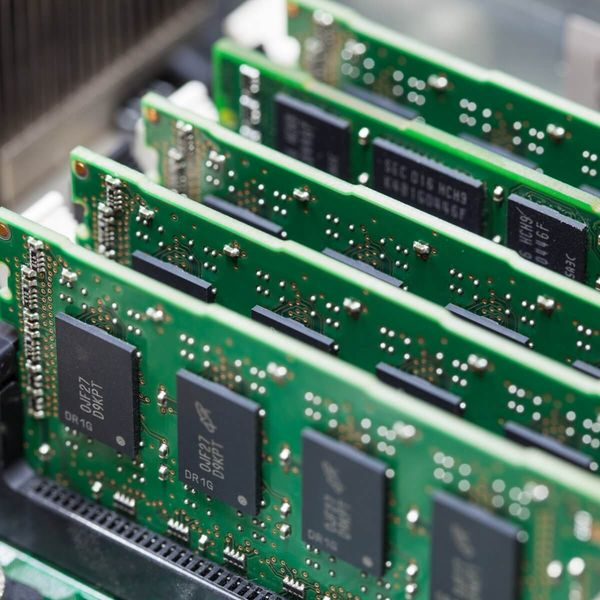
3.Bộ nhớ Rom:
_Bộ nhớ chỉ đọc (ROM) là đơn vị bộ nhớ chính của bất kỳ hệ thống máy tính nào cùng với Bộ nhớ truy cập ngẫu nhiên (RAM), nhưng không giống như RAM, trong ROM, thông tin nhị phân được lưu trữ vĩnh viễn. Bây giờ, thông tin được lưu trữ này được cung cấp bởi nhà thiết kế và sau đó được lưu trữ bên trong ROM. Sau khi được lưu trữ, nó vẫn ở trong thiết bị, ngay cả khi tắt và bật lại nguồn.
_Thông tin được nhúng vào ROM, dưới dạng các bit, bởi một quá trình được gọi là lập trình ROM. Ở đây, lập trình được sử dụng để chỉ quy trình phần cứng chỉ định các bit sẽ được chèn vào cấu hình phần cứng của thiết bị. Và đây là những gì làm cho ROM trở thành Thiết bị logic có thể lập trình (PLD).
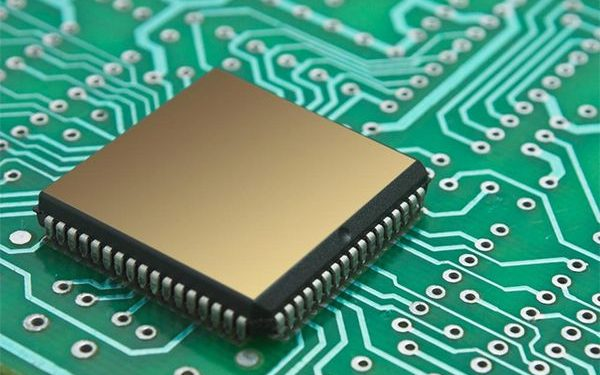
4.Ổ lưu trữ:
_Ổ cứng máy tính hay còn gọi là ổ cứng (Hard Disk Drive, viết tắt: HDD) là thiết bị dùng để lưu trữ dữ liệu trong máy tính của bạn. Với sự phát triển nhanh chóng của công nghệ, ổ đĩa cứng ngày nay có kích thước mỏng, gọn, nhẹ nhưng dung lượng thì ngày càng tăng lên.
_Ổ cứng ngoài việc phụ trách lưu trữ dữ liệu còn liên quan trực tiếp đến những vấn đề quan trọng khi sử dụng máy tính như: tốc độ khởi động máy, tốc độ chép xuất dữ liệu của máy, độ an toàn của dữ liệu cá nhân để trên máy.
_Bất cứ các thao tác phần mềm trên máy tính của bạn như sao chép, cắt dán, khởi động phần mềm,… nhanh hay chậm đều phụ thuộc vào cấu tạo phần cứng của ổ cứng tốt hay không.
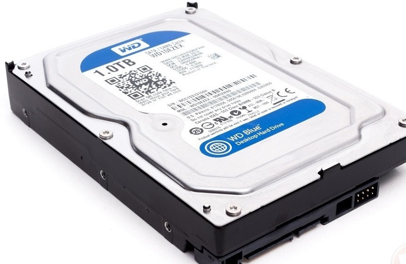
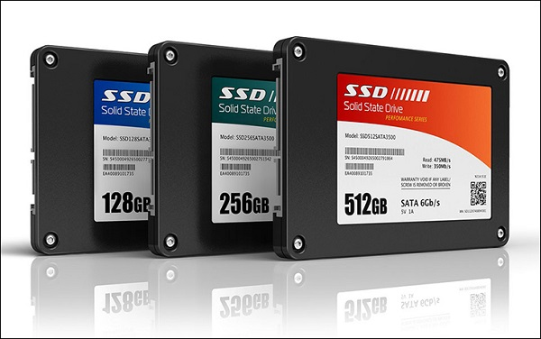
5.Nguồn máy tính:
Máy tính muốn hoạt động được cần phải có một bộ cấp nguồn để điều tiết và phân bổ các luồng điện khác nhau. Thế nhưng bạn đã thật sự hiểu rõ về bộ nguồn máy tính? Hãy theo dõi bài viết dưới đây để hiểu rõ hơn và biết được cách lựa chọn nguồn máy tính phù hợp nhé.
a.Định nghĩa:
Power Supply Unit (PSU) hay còn được gọi là nguồn máy tính, đây là một thiết bị nằm bên trong thùng máy giúp cung cấp năng lượng cho các bộ phận của máy tính như: Bo mạch chủ, ổ cứng, RAM,...
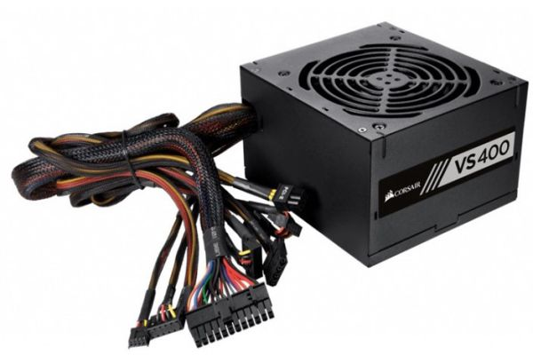
b.Nguyên lý hoạt động:
Nguồn máy tính được xem như là một bộ phận trung gian, giúp chuyển đổi dòng điện xoay chiều có hiệu điện thế lớn (Dòng điện từ ổ cắm - 220V) thành các dòng điện có mức điện áp nhỏ hơn. Các dòng điện áp nhỏ này sẽ là năng lượng phù hợp cho các thiết bị, linh kiện của máy tính có thể hoạt động.
c.Các đường điện có trong nguồn máy tính:
Nguồn máy tính sẽ có nhiều đường điện khác nhau phù hợp với mỗi linh kiện của máy tính. Cụ thể:
+ Đường điện +3.3V: Đây là một đường điện mới trên các bộ nguồn hiện đại. Đường điện này phù hợp với chuẩn ATX - cung cấp điện cho CPU và bộ nhớ chính.
+ Đường điện +5V: Cung cấp điện cho bo mạch chủ, linh kiện ngoại vi, CPU đời cũ (Pentium hoặc AthlonXP).
+ Đường điện -5V: Cung cấp điện cho các ổ đĩa mềm, mạch cấp điện các khe cắm ISA đời cũ.
+ Đường điện -12V: Đường điện này thường được sử dụng ở các nguồn máy tính đời cũ, các nguồn mới cũng có tích hợp nhưng vì lý do cường độ dòng điện yếu (Chưa tới 1A) nên ít được sử dụng.
+ Đường điện +12V: Đây là một đường điện quan trọng, cung cấp nguồn điện cho ổ cứng, card mở rộng và CPU nếu cần.
Các chuẩn đầu ra và các loại chân cắm trên nguồn
Nguồn máy tính là gì?
- Định nghĩa
Power Supply Unit (PSU) hay còn được gọi là nguồn máy tính, đây là một thiết bị nằm bên trong thùng máy giúp cung cấp năng lượng cho các bộ phận của máy tính như: Bo mạch chủ, ổ cứng, RAM,...
Bộ nguồn máy tính
- Nguyên lý hoạt động
Nguồn máy tính được xem như là một bộ phận trung gian, giúp chuyển đổi dòng điện xoay chiều có hiệu điện thế lớn (Dòng điện từ ổ cắm - 220V) thành các dòng điện có mức điện áp nhỏ hơn. Các dòng điện áp nhỏ này sẽ là năng lượng phù hợp cho các thiết bị, linh kiện của máy tính có thể hoạt động.
Nguyên lý hoạt động
- Các đường điện có trong nguồn máy tính
Nguồn máy tính sẽ có nhiều đường điện khác nhau phù hợp với mỗi linh kiện của máy tính. Cụ thể:
+ Đường điện +3.3V: Đây là một đường điện mới trên các bộ nguồn hiện đại. Đường điện này phù hợp với chuẩn ATX - cung cấp điện cho CPU và bộ nhớ chính.
+ Đường điện +5V: Cung cấp điện cho bo mạch chủ, linh kiện ngoại vi, CPU đời cũ (Pentium hoặc AthlonXP).
+ Đường điện -5V: Cung cấp điện cho các ổ đĩa mềm, mạch cấp điện các khe cắm ISA đời cũ.
+ Đường điện -12V: Đường điện này thường được sử dụng ở các nguồn máy tính đời cũ, các nguồn mới cũng có tích hợp nhưng vì lý do cường độ dòng điện yếu (Chưa tới 1A) nên ít được sử dụng.
+ Đường điện +12V: Đây là một đường điện quan trọng, cung cấp nguồn điện cho ổ cứng, card mở rộng và CPU nếu cần.
d. Các chuẩn đầu ra và các loại chân cắm trên nguồn:
- Chuẩn đầu ra
Chuẩn đầu ra hiện đang được các nhà sản xuất nguồn máy tính ưa chuộng sử dụng là chuẩn ATX 12V. Chuẩn này có 5 nhánh chính là:
+ ATX: 20 chân cắm.
+ WTX: 24 chân cắm.
+ ATX 12V: Gồm phần chính 20 chân cắm và phụ 4 chân cắm.
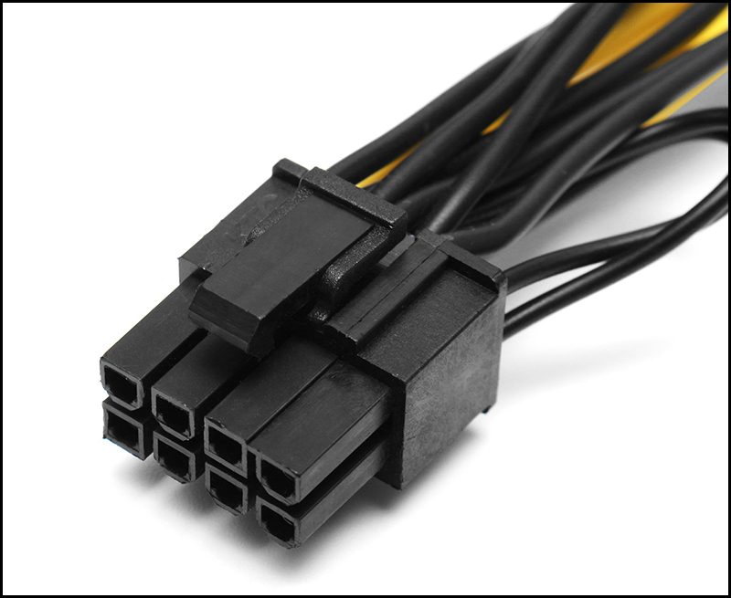
+ EPS12V: Gồm phần chính 24 chân cắm và phụ 8 chân cắm.
+ ATX12V phiên bản 2.0: Gồm phần chính 24 chân và phụ 4 chân.
- Các loại chân cắm
Các loại chân cắm thường được kết hợp từ nhiều dây điện với màu sắc khác nhau. Màu đỏ là dòng điện +5V, vàng là +12V, đen là dây mát. Dưới đây là các loại chân cắm phổ biến:
+Molex: Sử dụng để kết nối từ nguồn với các ổ đĩa cứng, ổ đĩa quang, quạt gió, bo mạch chủ của Asus, card màn hình Geforce 5, 6 hoặc Radeon X800.
+ Đầu cắm nguồn chính: Kết nối giữa nguồn và bo mạch chủ, thường là ATX 20 chân cắm hoặc ATX 24 chân cắm.
+ Dây điện phụ 12V: Gồm 4 đầu cắm với 2 chân 12V và 2 chân mát.
+ Đầu cắm SATA: SATA là ổ đĩa cứng cao cấp rất được ưa chuộng, để cắm ổ đĩa SATA bạn cần tối thiểu từ 2 - 4 chân cắm dẹt.
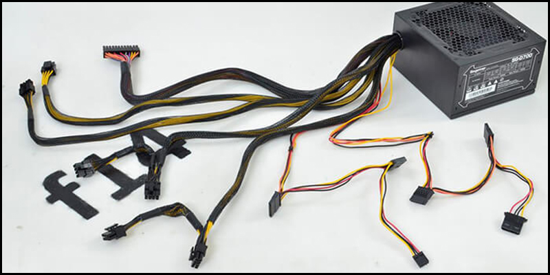
+ Đầu cắm PCI-Express: Đầu cắm này và đầu cắm SATA là những đầu cắm không thể thiếu trên các bộ nguồn máy tính hiện đại. Đây là loại đầu cắm dùng cho các card đồ họa và card mở rộng.
+ Đầu cắm ổ đĩa mềm: Đây là loại đầu cắm gồm 2 dây mát, 1 dây +5V, 1 dây +12V.
+ Đầu cắm EPS 12V 8 chân: Đầu cắm này sử dụng cho bo mạch chủ của máy tính trạm và hệ thống máy tính chuyên nghiệp, phức tạp.
6.Mainboard:
-Mainbroad hay còn gọi là Main máy tính hoặc bo mạch chủ, đây là một trong những bảng mạch đóng vai trò nền tảng trong một chiếc máy tính. Vị trí của main thường được đặt tại trung tâm của thùng máy.
-Chức năng chính của main khi sử dụng đó là phân phối điện cho CPU, RAM và những thành phần khác liên quan đến phần cứng của chiếc máy tính. Đồng thời cũng sẽ tạo ra một dòng liên kết chính để liên kết những phần này lại với nhau.
-Những cấu tạo của main máy tính hoặc bo mạch chủ sẽ có những phần chính được triển khai như sau:
+ Chipset ( Chipset Bắc và Chipset Nam ): Nhiệm vụ chính của chipset đó là chuyển dữ liệu từ ổ đĩa cứng đi qua bộ nhớ rồi đến với CPU. Đồng thời vẫn đảm bảo được các thiết bị ngoại vi và card mở rộng có thể giao tiếp với những CPU và các thiết bị khác được trang bị.
+ Đồng thời Chipset còn được sở hữu các tính năng quan trọng như: Điều khiển RAID, cổng FireWire vào mỗi phần seri bo mạch khác nhau. Ngoài ra, Chipset còn được dùng để giới hạn kiểu và tốc độ của CPU mà main server có thể tải được.
+ Việc tích hợp các tính năng khác nhau như: đồ họa, âm thanh, cổng USB cũng góp phần giúp tăng sự đa dạng và hữu ích của chipset khi sử dụng. Chính vì vậy mà đây là một trong những phần chính không thể thiếu đối với bất kỳ ai khi mua main server.
+ BIOS: Đây là một trong những thiết bị vào, ra rất quan trọng mà mỗi main server sở hữu, bởi vì chúng được thiết lập để chứa các thông số làm việc của hệ thống. Linh kiện này có thể được hàn dán trực tiếp vào main server hoặc lựa chọn cho mình một đế cắm để có thể tháo rời khi cần thiết.
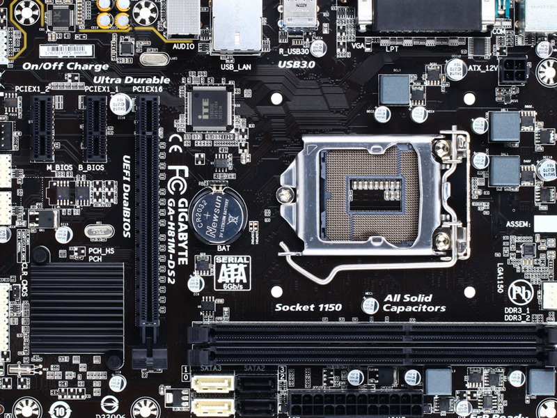
-Cấu tạo của main máy tính ra sao?
+ Socket: Đây được ví như là số chân cắm của CPU, tùy vào từng socket của CPU mà sẽ phù hợp với từng mainboard hỗ trợ.
+CPU: Là chuẩn khe cắm cho các bộ vi xử lý của các hãng khác nhau mà bạn cần phải quan tâm và lựa chọn sao cho phù hợp. Bởi ADM và Intel đều có sự khác nhau khi hình thành. Main có thể giúp hỗ trợ đến tối đa các tốc độ xử lý cần thiết.
+ Hệ thống bus: Đây là một trong những hệ thống chỉ tần số hoạt động tối đa của các đường giao tiếp dữ liệu của CPU mà Mainboard có thể hỗ trợ.
+ Khe cắm ISA: Đây là một trong những khe cắm được dùng để gắn thêm các bo mạch mở rộng như: Bo mạch âm thanh hoặc hình ảnh.
+ Khe cắm PCI: Khe nắm này được trang bị nhằm mục đích để lắp thêm các thiết bị có thể giao tiếp với máy tính như card âm thanh và phần modem….
+ Khe cắm PCI Express: Đây là dạng khe cắm chuẩn hỗ trợ lượng băng thông cao hơn gấp 30 lần so với chuẩn PCI đề ra, và thực sự có khả năng thay thế hoàn toàn các khe cắm PCI lẫn AGP.
+Ngoài ra, Mainboard còn chứa rất nhiều các bộ phận khác hữu ích, có thể hỗ trợ đến mức tối đa cho máy tính để đảm bảo sự hoạt động một cách hiệu quả.
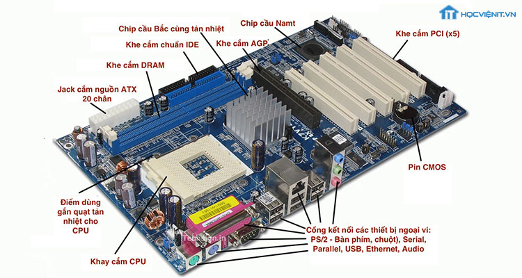
-Các loại Main máy tính hiện có trên thị trường:
+Với sự phát triển mạnh mẽ của công nghệ như hiện nay thì đang có rất nhiều nhà sản xuất cho ra đời các mainboard khác nhau, nhằm mục đích hỗ trợ tối đa cho người dùng. Tuy nhiên, trong số đó cũng sẽ các loại bo mạch chủ thường được ưa chuộng và sử dụng như: AT, ATX, Baby AT, BTX, DTX, Full AT, Full ATX, microATX, NLX…..
+Nếu tính về độ phổ biến rộng rãi nhất thì chúng ta có thể kể đến cái tên Mainboard ATX. Loại main này đang được sử dụng trong rất nhiều các máy tính hiện có trên thế giới. Bởi nó mang đến sự vận hành tốt và đảm bảo độ bền bỉ trong quá trình triển khai.
7.Một số bộ phận khác:
a.Quạt tản nhiệt:
-Mọi thiết bị sử dụng điện năng đều phát ra nhiệt bởi nhiệt năng được sinh ra trong quá trình truyền dẫn điện năng trong vật dẫn. Nói một cách dễ hiểu hơn, sự chuyển động của các electron hỗn loạn trong kim loại va đập vào các nút mạng trong cấu trúc tinh thể tạo ra nhiệt năng. Mọi thiết bị đều dùng dây dẫn tín hiệu điện bằng kim loại. Các vật chất bán dẫn khác cũng sinh ra nhiệt khi làm việc.
-Sự phát sinh nhiệt trong các thiết bị máy tính là điều không mong muốn. Một mặt khác khi nhiệt độ tăng lên đến một giới hạn chịu đựng nhất định thì các thiết bị này hoạt động không ổn định, có thể dẫn đến làm dừng hệ thống (treo máy) hoặc hư hỏng.
-Tản nhiệt dùng quạt là một hình thức tản nhiệt cưỡng bức. Thể loại này sử dụng các quạt nhỏ để lưu chuyển một luồng không khí từ phía sau của quạt đến phía trước chúng nhằm tản nhiệt cho các thiết bị.
-Tản nhiệt dùng quạt là phương thức tản nhiệt thông dụng và rẻ tiền nhất trong các phương pháp tản nhiệt cưỡng bức. Chỉ cần sử dụng các quạt gắn lên thiết bị cần tản nhiệt và kết nối vào các đầu cắm nguồn của máy tính hoặc bo mạch chủ.
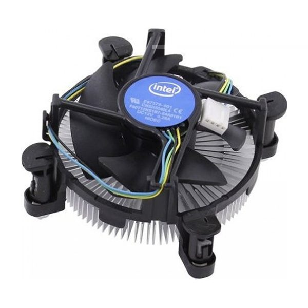
Các thiết bị sau trong máy tính có thể sử dụng tản nhiệt bằng quạt:
+CPU
+Ổ cứng
+Card đồ hoạ
+Nguồn máy tính
+Chipset cầu bắc
+Chipset cầu nam
+Vỏ máy tính: Sử dụng tản nhiệt cho toàn bộ hệ thống, một số quạt có thể bố trí tại vị trí phía trước thùng máy, hai bên hông và phía sau thùng máy. Vỏ máy tính còn có khả năng lợi dụng sự tản nhiệt dùng quạt của nguồn máy tính để lưu thông một lượng không khí lớn ra khỏi thùng máy.
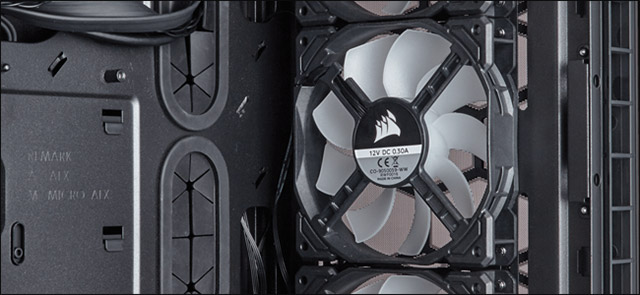
b.Vỏ máy tính(Case máy tính):
-Case máy tính (hay còn gọi là thúng hoặc vỏ máy tính) là một bộ phận bên ngoài có tác dụng bao bọc cho các thành phần bên trong của máy tính, tránh được các tác động không mong muốn từ bên ngoài.
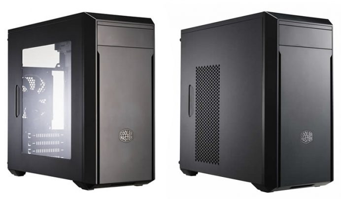
-Các đặc tính của case
Case máy tính cần phải có tính cứng, bền vững để đảm bảo định vị tốt các thiết bị bên trong. Đối với các ổ quang, ổ cứng và ổ mềm có thể không cần đến sự cứng chắc, bền vững bởi bản thân chúng đã có thể chịu đựng sự va đập nhưng đối với các bo mạch cần yêu cầu sự cứng chắc của case máy tính bởi tính chất này có thể làm ảnh hưởng đến chúng. Nếu case có thể bị biến dạng hoặc dễ bị vặn vẹo thì các bo mạch được định vị chắc chắn vào chúng sẽ bị vặn xoắn dẫn đến hư hỏng.
-Các loại case:Case có nhiều loại, từ nhỏ tời lớn với nhiều chức năng khác nhau. Dưới đây là một số loại case phổ thông:
+Mini Tower: là loại case đứng với kích thước nhỏ gọn, thường cao từ 35cm tới 40cm. Bên trong thường có từ 1 đến 2 khay cho ổ đĩa quang – SDD và HDD. Chính vì kích thước khá hạn hẹp nên thường chỉ gắn được motherboard M-ATX (micro ATX).
*Số lượng card đồ họa có thể gắn trong mini tower chỉ có 1, tuy nhiên cũng có một số case có chỗ cho cả 2 card đồ họa.
*Có ưu điểm là nhỏ gọn nhưng Mini Tower lại có điểm hạn chế là khả năng đi dây dẹp rất là khó, không gian chật hẹp nên hầu như không thể dấu dây vào đâu được vì vậy mà độ lưu thông khí cũng bị ảnh hưởng.
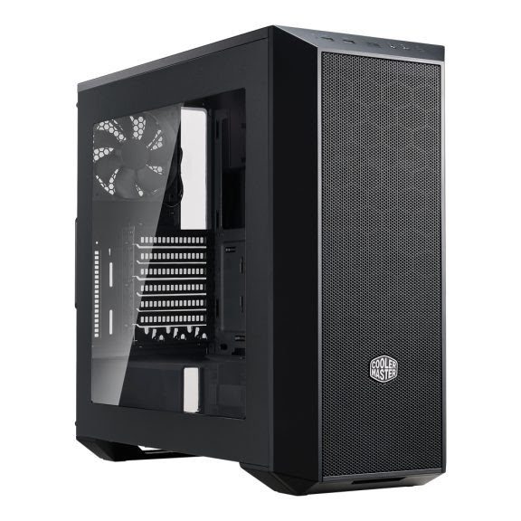
+Mid Tower: là loại case máy tính phổ biến nhất. Mid Tower có kích thước trung bình, không quá to mà không quá nhỏ. Case Mid Tower thường cao từ 43cm – 53cm, có khoảng 3 - 4 khay cho ổ đĩa quang – SDD và HDD các loại. Tất cả các case mid tower đều gắn được motherboard ATX trở xuống. Case đủ chỗ cho 2 card đồ họa nếu người dùng có ý định sử dụng.
*Mid Tower có thùng máy với kích thước vừa phải, bên trong khá thoáng mát, việc đi dây cũng dễ dàng hơn nhờ không gian rộng rãi, tuy nhiên không phải case nào cũng vậy vì còn tùy vào nhà sản xuất có tập trung tối ưu cho phần đi dây hay không.
 +Full Tower: loại case này có kích thước khá lớn. Case Full Tower thường cao từ 56cm – 86cm và có hơn 5 khay để bạn gắn ổ đĩa quang – SDD và HDD các loại. Case Full Tower luôn luôn bao thầu motherboard từ ATX trở xuống và thường gắn được các loại motherboard E-ATX (extented ATX), một số loại lớn hơn thì còn có thể gắn được XL-ATX (extra large ATX).
*Full tower hầu như đều có thể gắn tản nhiệt nước một cách thoải mái, đặc biệt là custom. Đi dây trong case Full Tower khá dễ dàng vì không gian rộng nên có thể đi dây theo mong muốn.
*Full Tower có ưu điểm dễ vệ sinh và tháo lắp linh kiện nhưng lại có giá khá đắt. Ngoài ra, Full Tower chỉ nên sử dụng khi có nhu cầu lắp nhiều thứ vào trong thùng máy bởi đáp ứng nhu cầu cao của người sử dụng nhưng lại không phải là thiết yếu.
*Ultra Tower / Super Tower: đây là một trong những loại case có kích thước khá lớn. Case loại này thường cao từ 68cm trở lên, chính vì có kích thước khủng long nên không gian bên trong sẽ rộng thênh thang, số khay để ổ đĩa các loại sẽ nhiều hơn full tower (thường giảm số khay ổ đĩa quang và tăng số lượng khay cho SSD và HDD). Ultra Tower sẽ thầu được tất cả các loại motherboard, từ nhỏ cho tới đại như SSI CEB và SSI EEB.
*Case Ultra Tower thường được vì giống như “một cái tủ lạnh mini”. Mọi nhược điểm của các loại case khác như đi dây, vệ sinh, tản nhiệt… đều được tối ưu hóa ở loại Ultra Tower / Super Tower này.
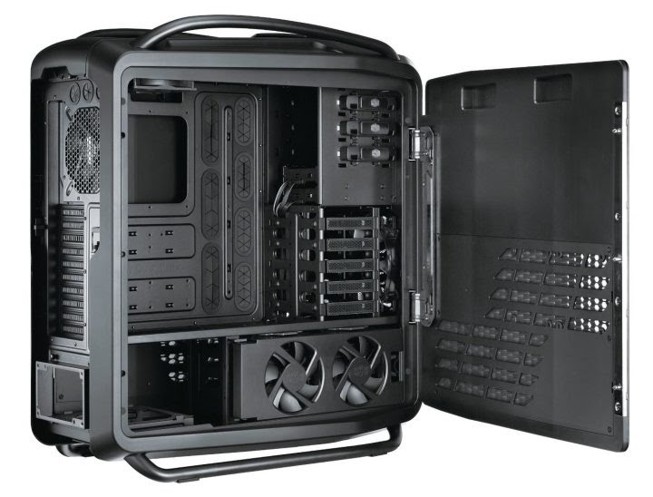
+Full Tower: loại case này có kích thước khá lớn. Case Full Tower thường cao từ 56cm – 86cm và có hơn 5 khay để bạn gắn ổ đĩa quang – SDD và HDD các loại. Case Full Tower luôn luôn bao thầu motherboard từ ATX trở xuống và thường gắn được các loại motherboard E-ATX (extented ATX), một số loại lớn hơn thì còn có thể gắn được XL-ATX (extra large ATX).
*Full tower hầu như đều có thể gắn tản nhiệt nước một cách thoải mái, đặc biệt là custom. Đi dây trong case Full Tower khá dễ dàng vì không gian rộng nên có thể đi dây theo mong muốn.
*Full Tower có ưu điểm dễ vệ sinh và tháo lắp linh kiện nhưng lại có giá khá đắt. Ngoài ra, Full Tower chỉ nên sử dụng khi có nhu cầu lắp nhiều thứ vào trong thùng máy bởi đáp ứng nhu cầu cao của người sử dụng nhưng lại không phải là thiết yếu.
*Ultra Tower / Super Tower: đây là một trong những loại case có kích thước khá lớn. Case loại này thường cao từ 68cm trở lên, chính vì có kích thước khủng long nên không gian bên trong sẽ rộng thênh thang, số khay để ổ đĩa các loại sẽ nhiều hơn full tower (thường giảm số khay ổ đĩa quang và tăng số lượng khay cho SSD và HDD). Ultra Tower sẽ thầu được tất cả các loại motherboard, từ nhỏ cho tới đại như SSI CEB và SSI EEB.
*Case Ultra Tower thường được vì giống như “một cái tủ lạnh mini”. Mọi nhược điểm của các loại case khác như đi dây, vệ sinh, tản nhiệt… đều được tối ưu hóa ở loại Ultra Tower / Super Tower này.
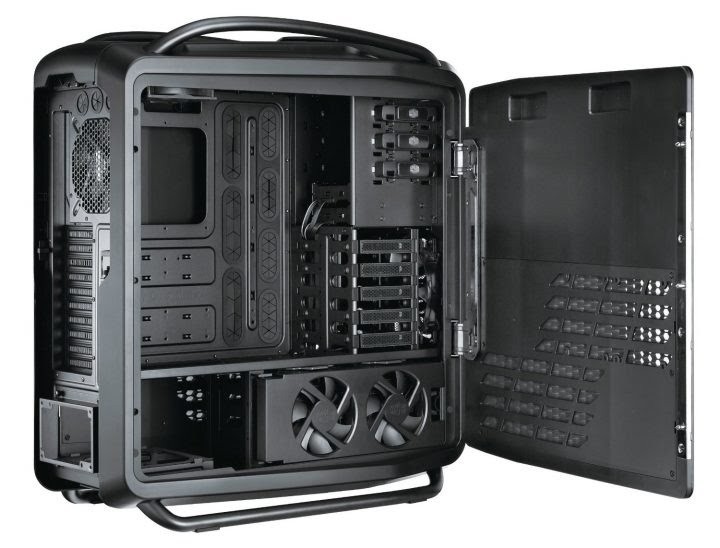
c.Card đồ họa(Card màn hình):
-Card đồ họa (Graphics card) hay còn gọi là card màn hình là một loại thiết bị chuyên xử lý các thông tin về hình ảnh trong máy tính, cụ thể như màu sắc, chi tiết độ phân giải, độ tương phản của hình ảnh.
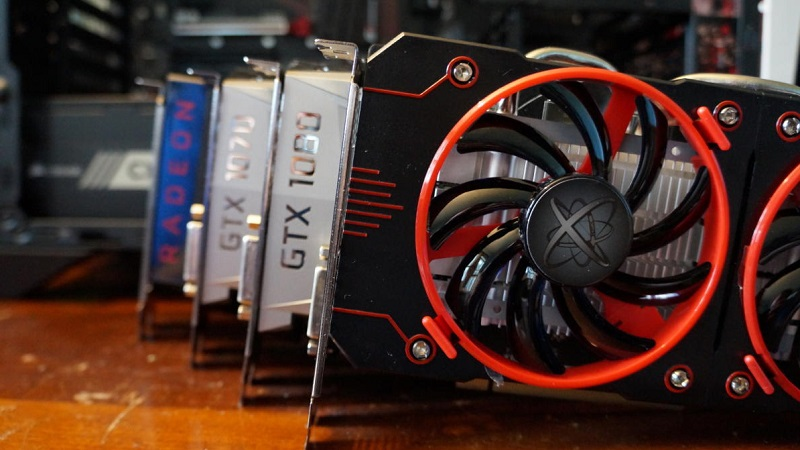
-Bộ phận quan trọng nhất, quyết định sức mạnh của một card đồ hoạ chính là bộ xử lý đồ họa (Graphic Processing Unit) hay còn gọi tắt là GPU có nhiệm vụ riêng biệt là xử lý mọi vấn đề về hình ảnh của máy tính.
-Tóm tắt gọn hơn thì card đồ họa sẽ quyết định việc chơi game, xem video, học tập về đồ họa trên máy tính đó là tốt hoặc kém.
-Card đồ họa chia làm hai loại: Card rời và card onboard (tích hợp sẵn trên main máy tính).
+ Card Onboard: Được tích hợp trên bo mạch chủ (main) của máy tính, cụ thể hơn nó được tích hợp vào CPU (CPU là bộ vi xử lý trung tâm, là bộ não điều khiển mọi hoạt động của máy tính) và sử dụng sức mạnh của CPU cùng bộ nhớ RAM (bộ nhớ tạm chứa thông tin của các ứng dụng đang chạy) để hỗ trợ giúp xử lý hình ảnh. Chính vì vậy mà việc xử lý đồ họa của card onboard thường không bằng card rời trong cùng một cấp độ.
*Bù lại, Card Onboard lại giúp giảm giá thành đáng kể cho chiếc máy tính. Ngày nay, với công nghệ tiên tiến của các thế hệ CPU thế hệ mới, điển hình là của hàng Intel, sức mạnh của Card Onboard được gia tăng đáng kể. Việc chơi game 3D hay xem các bộ phim HD là việc mà các bộ xử lý đồ hoạ tích hợp hoàn toàn có thể đảm đương được.
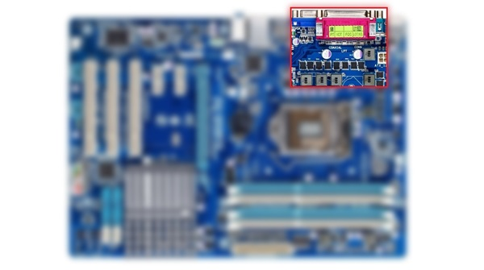
+ Card rời: cũng có tính năng công việc như card onboard nhưng card rời có đẩy đủ hẳn một bộ phận riêng để hoạt động độc lập, chuyên xử lý tất cả dữ liệu về hình ảnh. Vì vậy nên những sãn phẩm có card rời sẽ cho hình ảnh đồ họa tốt hơn với card onboard cùng cấp độ.
-Hiện nay trên thị trường có hai hãng sản xuất chính cho card đồ họa đó là Nvidia và ADM. Cả 2 đều là hãng sản xuất có danh tiếng và các sản phẩm của họ cũng có ưu khuyết điểm khó có thể so sánh ai hơn ai. Tuy nhiên tại thị trường Việt Nam thì số lượng card rời Nvidia được sử dụng trên máy tính có phần vượt trội hơn so với AMD.
-Một số thông tin người dùng cần biết thêm đó là Card Onboard cả trên máy tính để bàn hay laptop thì đều không thể tháo rời ra hoặc thay thế được vì nó được tích hợp trên bo mạch chủ. Ngược lại, loại Card rời trên máy tính bàn có thể thay thế được, tuy nhiên card rời trên laptop tuy là một bộ phận làm việc độc lập nhưng cũng được hàn vào bo mạch chủ nên không thể tháo ra như card rời của máy tính để bàn được

II.Cách lắp ráp:
1.Công cụ tháo lắp:

1.Công cụ tháo lắp:
Trước khi build PC, bạn cần chuẩn bị sẵn các dụng cụ và trang bị sau đây:
-Bộ tua vít đa năng với đầy đủ các dạng đầu và kích cỡ.
-Nhíp đầu cong và đầu thẳng để gắp các linh kiện như ốc, chip IC hay mở các mạch kết nối ở những vị trí hẹp khi mà bạn không thể dùng tay để thao tác.
-Dây rút nhựa để ẩn phần dây kết nối giữa các linh kiện bên trong vỏ case như GPU, SSD, HDD, quạt tản nhiệt,… để tăng tính thẩm mĩ cho case, giúp luồng khí trong PC lưu thông dễ dàng, tránh việc tăng nhiệt độ của các phần cứng.
-Dây đeo cổ tay chống tĩnh điện để đảm bảo an toàn, ngăn chặn sự tích tụ tĩnh điện trên cơ thể người. Việc tích tụ tĩnh điện có thể dẫn đến phóng tĩnh điện gây nguy hại đến các bộ phận nhạy cảm như CPU hay RAM.
-Setup trước màn hình, bàn phím, chuột để sau khi lắp máy tính xong thì có thể tiến hành chạy thử và đừng quên chuẩn bị sẵn một ổ cắm điện, dây kết nối internet.
-Công cụ để cài hệ điều hành: Đĩa CD hoặc USB, ổ cứng, DVD. Để nhanh, tiện lợi thì bạn nên chuẩn bị sẵn USB chứa bộ cài windows 10, hệ điều hành mới nhất hiện nay.
2.Các bước tháo lắp:
a.Tháo vỏ máy tính:
-Mở 2 bên hông thùng máy bằng cách dùng tua vít tháo các con ốc và đẩy trượt vỏ case về phía sau. Nhấc nhẹ nắp ra và để ở nơi an toàn, ốc vít các bạn nên để trong cái khay nhỏ để tránh bị thất lạc.
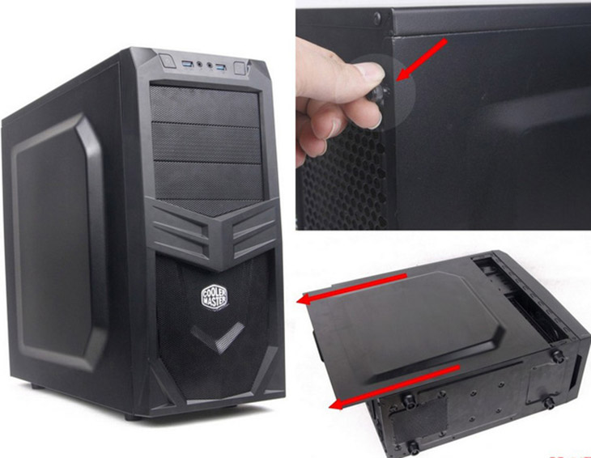
b.Lắp quạt làm mát cho máy tính:
-Khi lắp quạt làm mát thì hãy chú ý đến hướng thổi của quạt. Quạt sẽ có hai mặt, mặt trước thường dán nhãn logo, mặt sau cũng dán nhãn logo nhưng sẽ có thêm vài thông số kĩ thuật.
-Ngoài ra mặt sau có thêm những thanh nhựa nối giữa khung và trục quay. Nếu quên thì bạn có thể nhìn ở phía hông quạt sẽ để 2 mũi tên, mũi tên nằm ngang sẽ chỉ hướng gió lưu thông, mũi tên đứng sẽ chỉ hướng cánh quạt quay.
 -Hướng không khí sẽ đi từ mặt trước ra mặt sau. Lắp quạt đảm bảo sao cho lượng không khí đi vào nhiều hơn lượng khí đi ra khỏi case để tối ưu khả năng tản nhiệt cho máy tính.
-Thường thì sẽ có 2 quạt ở phía trước hút không khí vào và ít nhất 1 quạt sẽ gắn ở phía sau case để đẩy hết khí nóng bên trong case ra ngoài. Bạn cũng có thể lắp thêm một hoặc 2 quạt ở phía trên nóc vỏ máy tính để xả khí nóng ra.
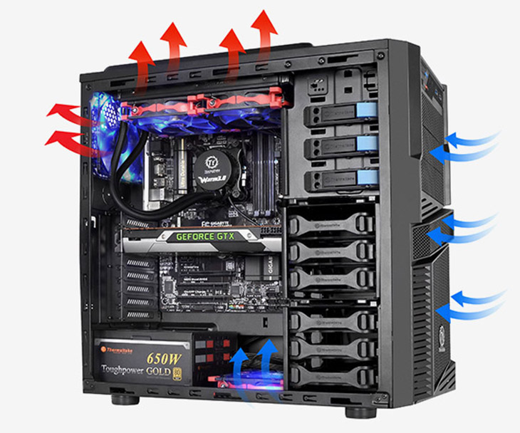
c.Lắp tấm chắn main và ốc đệm:
-Tấm chắn main (I/O Shield) thường đi kèm với bo mạch chủ, có hình chữ nhật được lắp vào khoảng sau của case máy tính. Tấm chắn main này có các lỗ để cắm các thiết bị ngoại vi như chuột, bàn phím, dây loa, USB, dây mạng,... và bảo vệ main từ các tác động bên ngoài khi cắm nhiều cáp vào cổng I/0.
-Bây giờ hãy đặt tấm chắn main vào khe hình chữ nhật ở phía sau vỏ PC. Hãy chắc chắn rằng mặt trong của chắn là mặt của các cổng cắm được bẻ vào bên trong và hướng các cổng Audio sẽ nằm ở dưới.
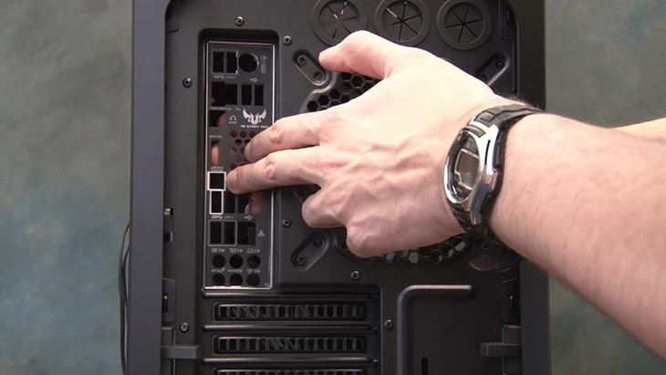
-Tiếp theo hãy lắp ốc đệm để đỡ bo mạch chủ. Nếu không lắp ốc đệm board sẽ tiếp xúc với vỏ case và dẫn đến chập điện khi ghim nguồn. Hãy xem bo mạch chủ có bao nhiêu vị trí để có thể bắt ốc đệm một cách chính xác, tránh dư cũng như thiếu ốc đệm.
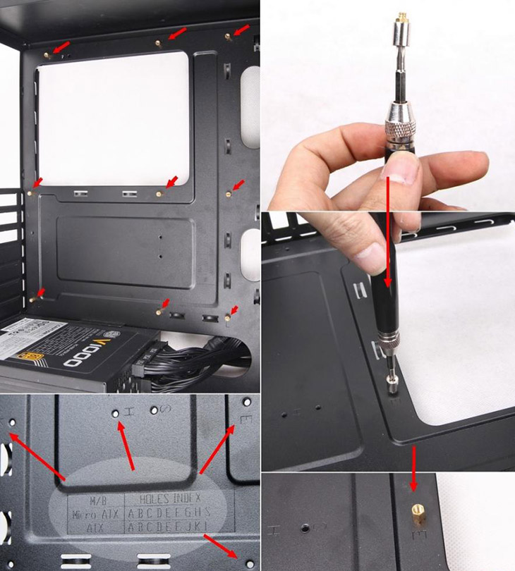
-Đặt board mạch chủ của bạn lên trên các ốc đệm ở trong case, cẩn thận đặt các cổng kết nối tương ứng với các lỗ cắm ở tấm chắn I/O mà bạn vừa lắp. Sau đó, chỉ việc cố định bo mạch chủ bằng các ốc main.
d.Lắp CPU:
-Bước tiếp theo, lắp CPU vào bo mạch chủ.
-Tháo nắp che bằng cách ấn nhẹ chốt xuống và đẩy lẫy kim lại sang bên phải rồi kéo nắp che socket lên. Nhẹ nhàng đặt CPU của bạn vào bên trong đế socket sao cho khớp hoàn toàn.
-Lưu ý sẽ có một hình tam giác ở góc trái bên dưới và 2 phần lõm vào ở cạnh của CPU, các điểm này phải trùng với các dấu hiệu ở trên main.
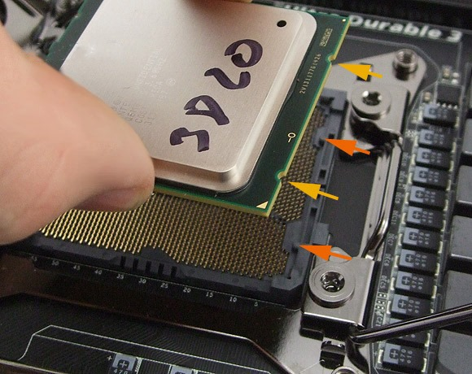
-Đóng nắp che CPU lại, thao tác ngược như lúc tháo, nắp che CPU sẽ bật ra tức là đã hoàn thành. Nắp che CPU nên giữ lại phòng khi tháo CPU ra thì lắp nó vào che socket tránh khỏi bị cong chân.
e.Lắp RAM:
-RAM và Mainboard cần phải chọn đúng chuẩn để tương thích với nhau, đảm bảo máy tính có hiệu suất làm việc cao nhất.
*Nếu chỉ cắm 1 thanh RAM thì nên ưu tiên cắm ở vị trí xa CPU để tránh nhiệt độ nóng phát ra từ CPU.
*Nếu bạn muốn cắm 2 thanh RAM trong trường hợp main của bạn có đến 4 khe cắm thì hãy cắm xen kẽ với nhau để được hỗ trợ công nghệ dual channel (nhân đôi tốc độ truyền thông giữa bộ điều khiển nhớ và bộ nhớ RAM để cải thiện được hiệu suất hệ thống).
-Mỗi dòng RAM sẽ có chân cắm khác nhau nên các bạn lưu ý. Ấn nhẹ chốt ở hai đầu khe RAM ra 2 bên, đưa RAM vào đúng vị trí sao cho phần lõm ở chân RAM khớp với chân cắm bên dưới. Để thẳng RAM với chân cắm rồi ấn 2 đầu xuống, 2 chốt sẽ khép lại và cố định thanh RAM.
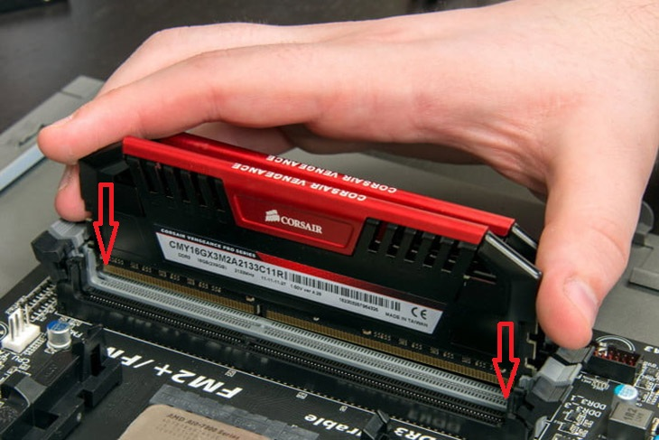
h.Lắp quạt làm mát CPU:
-Đây là phần phức tạp trong quá trình lắp ráp PC, lắp quạt làm mát CPU.
-Đặt cẩn thận tản nhiệt lên sao cho 4 chân khít với 4 lỗ xung quanh CPU, cố định bằng cách đè đối xứng từng cặp chân quạt tản nhiệt sao cho nghe tiếng “cóc” là được. Sau đó, cắm luôn dây tản nhiệt vào 4 chân CPU Fan ở trên main.
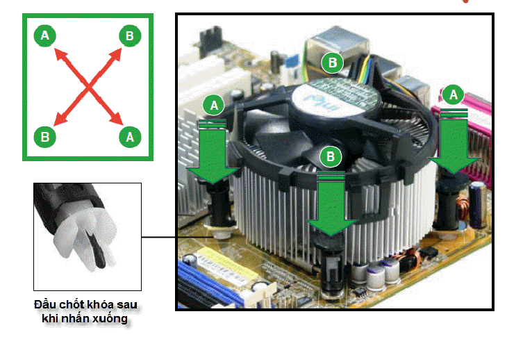
k.Lắp đặt ổ cứng:
-Hiện nay các case đều hỗ trợ lắp được nhiều lại ổ cứng từ SSD, HDD cho đến DVD, mỗi loại đều có khay lắp riêng tương thích với kích thước từng loại ổ cứng.
-Cách lắp vào case khá đơn giản nên các bạn cứ yên tâm. Để HDD nằm ngang, chú ý phần mạch hướng xuống, đặt vào khay chứa ổ cứng, đẩy khay vào trong rồi bắt ốc vít cố định.
-Lắp ổ cứng SSD cũng tương tự, tuy nhiên mỗi case sẽ có vị trí để lắp SSD riêng. Trên thân SSD sẽ có lỗ để bắt ốc, nên lưu ý vị trí đặt ổ SSD để tiện cho việc cắm dây SATA.
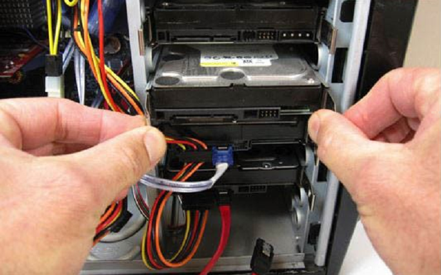
-Khi lắp cáp vào main và cáp dữ liệu SATA cho ổ cứng để ý phần khớp chữ L ở đầu cáp, cổng trên main cũng tương tự như vậy, đặt đúng chiều và đẩy nhẹ vào.
g.Lắp nguồn (PSU):
-Sau khi đã lắp đặt xong mainboard, CPU, bộ nhớ và ổ cứng, tiếp theo bạn sẽ tiếp tục lắp nguồn. Thường thì nguồn sẽ được lắp ở dưới cùng của máy tính do nguồn khá nặng, nếu thao tác không cẩn thận có thể rơi vào main hay các linh kiện khác dẫn đến hư hỏng.
-Việc lắp nguồn ở phía dưới cũng tạo ra nhiều không gian hơn so với lắp ở trên nóc vỏ máy tính.
-Đặt nguồn vào nơi được bố trí sẵn trong case, phần ghim điện sẽ hướng ra sau case, đẩy PSU vào các vị trí bắt ốc vít và siết chặt. Phần quạt tản nhiệt tích hợp bên trong nguồn nên hướng xuống dưới đáy PC, việc này sẽ giúp nguồn hút được không khí mát.
-Hướng không khí sẽ đi từ mặt trước ra mặt sau. Lắp quạt đảm bảo sao cho lượng không khí đi vào nhiều hơn lượng khí đi ra khỏi case để tối ưu khả năng tản nhiệt cho máy tính.
-Thường thì sẽ có 2 quạt ở phía trước hút không khí vào và ít nhất 1 quạt sẽ gắn ở phía sau case để đẩy hết khí nóng bên trong case ra ngoài. Bạn cũng có thể lắp thêm một hoặc 2 quạt ở phía trên nóc vỏ máy tính để xả khí nóng ra.
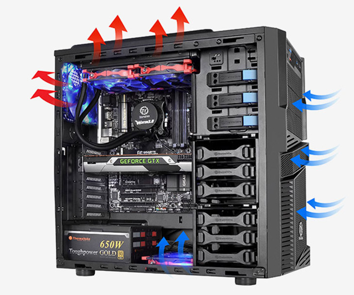
c.Lắp tấm chắn main và ốc đệm:
-Tấm chắn main (I/O Shield) thường đi kèm với bo mạch chủ, có hình chữ nhật được lắp vào khoảng sau của case máy tính. Tấm chắn main này có các lỗ để cắm các thiết bị ngoại vi như chuột, bàn phím, dây loa, USB, dây mạng,... và bảo vệ main từ các tác động bên ngoài khi cắm nhiều cáp vào cổng I/0.
-Bây giờ hãy đặt tấm chắn main vào khe hình chữ nhật ở phía sau vỏ PC. Hãy chắc chắn rằng mặt trong của chắn là mặt của các cổng cắm được bẻ vào bên trong và hướng các cổng Audio sẽ nằm ở dưới.
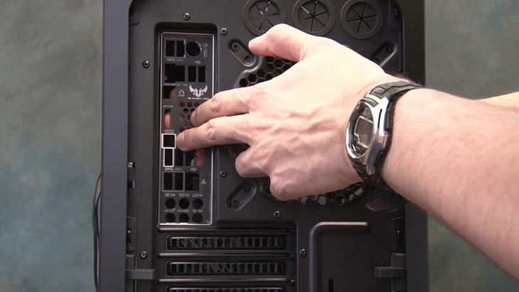
-Tiếp theo hãy lắp ốc đệm để đỡ bo mạch chủ. Nếu không lắp ốc đệm board sẽ tiếp xúc với vỏ case và dẫn đến chập điện khi ghim nguồn. Hãy xem bo mạch chủ có bao nhiêu vị trí để có thể bắt ốc đệm một cách chính xác, tránh dư cũng như thiếu ốc đệm.
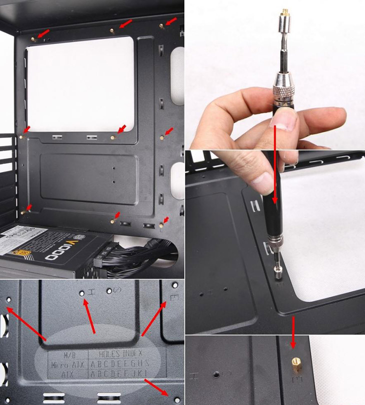
-Đặt board mạch chủ của bạn lên trên các ốc đệm ở trong case, cẩn thận đặt các cổng kết nối tương ứng với các lỗ cắm ở tấm chắn I/O mà bạn vừa lắp. Sau đó, chỉ việc cố định bo mạch chủ bằng các ốc main.
d.Lắp CPU:
-Bước tiếp theo, lắp CPU vào bo mạch chủ.
-Tháo nắp che bằng cách ấn nhẹ chốt xuống và đẩy lẫy kim lại sang bên phải rồi kéo nắp che socket lên. Nhẹ nhàng đặt CPU của bạn vào bên trong đế socket sao cho khớp hoàn toàn.
-Lưu ý sẽ có một hình tam giác ở góc trái bên dưới và 2 phần lõm vào ở cạnh của CPU, các điểm này phải trùng với các dấu hiệu ở trên main.
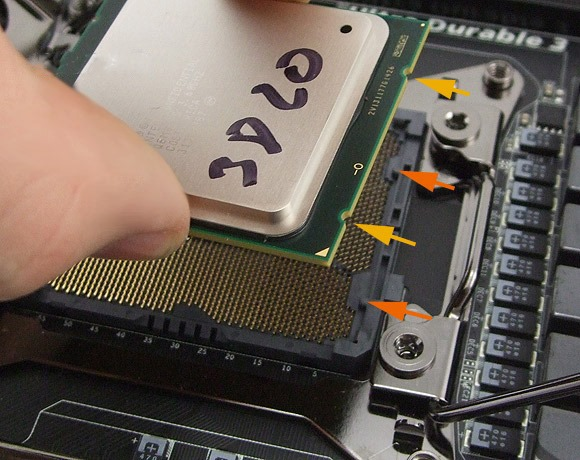
-Đóng nắp che CPU lại, thao tác ngược như lúc tháo, nắp che CPU sẽ bật ra tức là đã hoàn thành. Nắp che CPU nên giữ lại phòng khi tháo CPU ra thì lắp nó vào che socket tránh khỏi bị cong chân.
e.Lắp RAM:
-RAM và Mainboard cần phải chọn đúng chuẩn để tương thích với nhau, đảm bảo máy tính có hiệu suất làm việc cao nhất.
*Nếu chỉ cắm 1 thanh RAM thì nên ưu tiên cắm ở vị trí xa CPU để tránh nhiệt độ nóng phát ra từ CPU.
*Nếu bạn muốn cắm 2 thanh RAM trong trường hợp main của bạn có đến 4 khe cắm thì hãy cắm xen kẽ với nhau để được hỗ trợ công nghệ dual channel (nhân đôi tốc độ truyền thông giữa bộ điều khiển nhớ và bộ nhớ RAM để cải thiện được hiệu suất hệ thống).
-Mỗi dòng RAM sẽ có chân cắm khác nhau nên các bạn lưu ý. Ấn nhẹ chốt ở hai đầu khe RAM ra 2 bên, đưa RAM vào đúng vị trí sao cho phần lõm ở chân RAM khớp với chân cắm bên dưới. Để thẳng RAM với chân cắm rồi ấn 2 đầu xuống, 2 chốt sẽ khép lại và cố định thanh RAM.
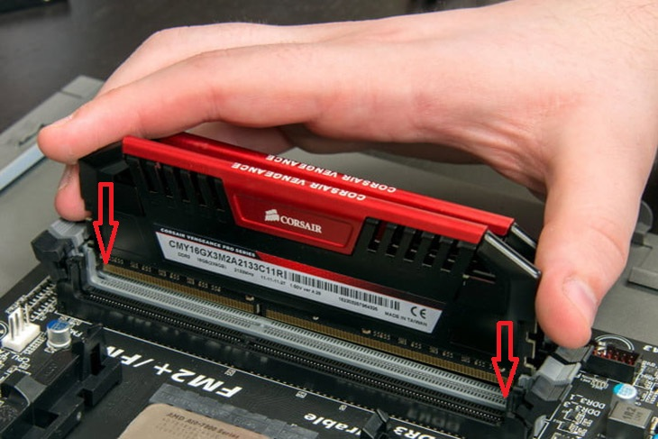
h.Lắp quạt làm mát CPU:
-Đây là phần phức tạp trong quá trình lắp ráp PC, lắp quạt làm mát CPU.
-Đặt cẩn thận tản nhiệt lên sao cho 4 chân khít với 4 lỗ xung quanh CPU, cố định bằng cách đè đối xứng từng cặp chân quạt tản nhiệt sao cho nghe tiếng “cóc” là được. Sau đó, cắm luôn dây tản nhiệt vào 4 chân CPU Fan ở trên main.
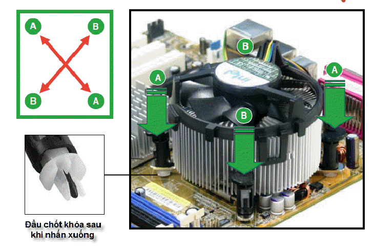
k.Lắp đặt ổ cứng:
-Hiện nay các case đều hỗ trợ lắp được nhiều lại ổ cứng từ SSD, HDD cho đến DVD, mỗi loại đều có khay lắp riêng tương thích với kích thước từng loại ổ cứng.
-Cách lắp vào case khá đơn giản nên các bạn cứ yên tâm. Để HDD nằm ngang, chú ý phần mạch hướng xuống, đặt vào khay chứa ổ cứng, đẩy khay vào trong rồi bắt ốc vít cố định.
-Lắp ổ cứng SSD cũng tương tự, tuy nhiên mỗi case sẽ có vị trí để lắp SSD riêng. Trên thân SSD sẽ có lỗ để bắt ốc, nên lưu ý vị trí đặt ổ SSD để tiện cho việc cắm dây SATA.
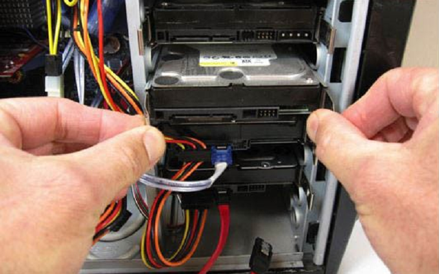
-Khi lắp cáp vào main và cáp dữ liệu SATA cho ổ cứng để ý phần khớp chữ L ở đầu cáp, cổng trên main cũng tương tự như vậy, đặt đúng chiều và đẩy nhẹ vào.
g.Lắp nguồn (PSU):
-Sau khi đã lắp đặt xong mainboard, CPU, bộ nhớ và ổ cứng, tiếp theo bạn sẽ tiếp tục lắp nguồn. Thường thì nguồn sẽ được lắp ở dưới cùng của máy tính do nguồn khá nặng, nếu thao tác không cẩn thận có thể rơi vào main hay các linh kiện khác dẫn đến hư hỏng.
-Việc lắp nguồn ở phía dưới cũng tạo ra nhiều không gian hơn so với lắp ở trên nóc vỏ máy tính.
-Đặt nguồn vào nơi được bố trí sẵn trong case, phần ghim điện sẽ hướng ra sau case, đẩy PSU vào các vị trí bắt ốc vít và siết chặt. Phần quạt tản nhiệt tích hợp bên trong nguồn nên hướng xuống dưới đáy PC, việc này sẽ giúp nguồn hút được không khí mát.